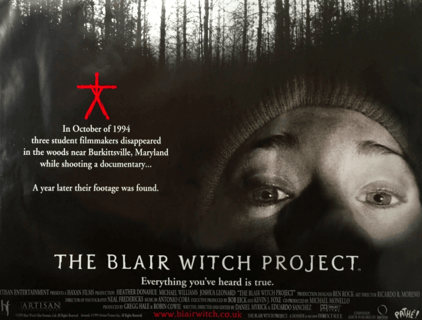

The Blair Witch Project (1998.)
It is perhaps serendipitous that we end this list with what might be the most influential horror movie of the ‘90s.
While The Blair Witch Project is more indicative of what came in the subsequent decade with the explosion of found
footage schlock, this Gen-X touchstone remains the best of its subgenre thanks to the era and instincts in which it
was created. Released during the early, wild west days of the internet, The Blair Witch Project benefited as a pop
culture phenomenon by the sheer naiveté of audiences who believed whatever they read on the internet was true.
Sadly, they still do (sigh), but back then it was charming that folks believed this was a “real” documentary cobbled
out of footage found in the woods!
And on that allegedly cursed video is the last days of three student filmmakers who went out into the Maryland wilderness to shoot a
doc for class about the local legend of a “Blair Witch.” Since childhood they’d all heard the stories about how an entity has haunted
these lands since the 1600s. Yet what they find is the slow realization that they’re lost and there’s something in the woods with them.
Eventually, it even dawns on them that they’re recording their own demise.
Filmed in a cinema verté style that leaned into the then popular indie instincts of favoring messy, raw “reality” over big studio gloss,
The Blair Witch Project never shows you anything supernatural. But the inescapable dread of impending doom is overwhelming as the inexplicable
takes on a bent of the sinister, and all that’s left to do is record for posterity.

 RETRO SCREEEAMS!
RETRO SCREEEAMS!